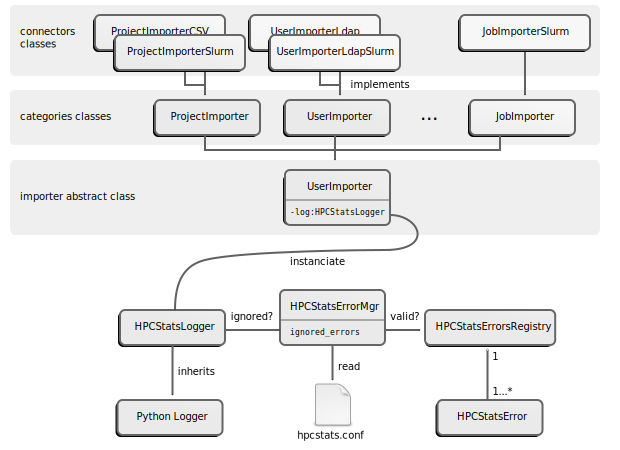

Architecture¶
HPCStats is composed of a server component, the main part of the software, and various agents and a launcher. The server component is mainly used to extract raw production data from various sources and then import it into the HPCStats database. The agents are used to produce data well formatted data on the supercomputer, typically on the frontend (or login) nodes. All these components are described with full details in the following sub-sections.
Database¶
All production data imported by HPCStats are structured and hosted in a relational SQL database using PostgreSQL 9+ RDBMS. The following figure represents the UML class diagram of the HPCStats database:

The database is designed to store the data coming from multiple supercomputers
(or clusters). Therefore, most tables are linked, directly or not, to the
Cluster table (Jobs, Filesystems, etc). The notable exceptions are:
- The projects, domains and business codes because they are transversal to all clusters.
- The users because they can be associated with multiple account, one account per cluster.
Server¶
The following diagrams represents the software architecture of the base of HPCStats server component:

Whole server component is management by the HPCStats launcher. This launcher sequentially instanciates the following objects:
- The Argument parser (class
HPCStatsArgumentParser): It parses the arguments given in the command line of the hpcstats command and checks their coherency and correctness. - The Configuration handler (class
HPCStatsConf): It reads the main HPCStats configuration file and gives an abstraction for the other classes to access configuration parameters. - The Application (class
HPCStatsApp): The actual application to run.
HPCStats server component has multiple applications that are available to users. The launched application depends on the action parameter given in the command line (please refer to the Usage guide for details). The available applications are:
- Importer application: Extract raw production data from various sources, structure and import them into the HPCStats database ;
- Checker application: Just quickly check if the configured data sources are available for extraction ;
- Modifier application: Slightly modify the database in database to manage projects, domain and business codes ;
- Exporter application (very experimental): Generate reports full of statistics with data in HPCStats database.
The Importer application is the original, main and most complex application of HPCStats server component. This diagrams gives on overview of this application architecture:

The Importer application is divided into several importer categories. Each category has multiple implementations called connectors. These connectors instanciate the model classes to manipulate the HPCStats database content.
Each category of importer is responsible of filling one or more tables of the database. On the other side, a table is filled by only one importer category.
All the connectors and database tables associated to the importer categories are summarised in the following table:
| Category | Database tables | Available connectors |
|---|---|---|
Project |
|
|
BusinessCode |
|
|
Architecture |
|
|
User |
|
|
Job |
|
|
FSUsage |
|
|
Event |
|
|
The inner working of each connector is explained with all details in the API reference.
Agents¶
Notable feature of HPCStats are end-to-end supercomputer availability measurement from users standpoint and shared filesystem usage rate. Those metrics are hard to track from a remote server. Therefore, for such purpose, some agents and a launcher components have been designed.
The following diagram illustrate the deployed architecture of these components:

fsusageagent can be installed on login nodes, and then launched periodically by a cronjob to log constantly the filesystems usage rate in a CSV file. This CSV file is then read through an SSH connection and parsed byFSUsageImporterSSHconnector to fill the HPCStats database.jobstatsagent can also be installed on login nodes. It generates a job submission script and submit it to the job scheduler.launcheris a program, installed on the central HPCStats server node that connects to the login nodes using SSH to trigger thejobstatsagent from outside the supercomputer. The data generated by these fake jobs are then stored in job scheduler accounting system and gathered by Job importers category.
These agents are optionals, there role is just to generate accurate data for specific metrics.
Error management¶
The HPCStats Importer application may report errors during its processing, as long as it encounters errors in the data sources. All these errors are handled by an error management framework. This framework controls which errors must be reported to users or not, according to a configuration parameter.
The following diagram illustrates the architecture of the framework:
All the errors reported by the Importer applications are actually
HPCStatsError objects.
All the connectors classes indirectly inherit from the abstract
Importer class. This class initializes its log attributes with
an instance of the specific HPCStatsLogger class. Additionnaly to
all the standard methods of its parent class, the standard Python Logger, this
class also has a warn() method used all through the connectors classes to
report HPCStatsError.
The HPCStatsErrorMgr refers to the configuration to establish a set
of errors to ignore. Then, the logger relies on this manager to define how to
handle the errors. If the error must be reported, a warning message is sent.
On the opposite, if the error must be ignored, it is just sent as a debug
message not visible to users in most cases.
The HPCStatsErrorsRegistry contains the list of all errors the
Importer application may report. This registry is used in connector classes to
report the errors and by the error manager to check validity of ignored errors
specified in configuration.
This table gives the full list of errors of the registry with their associated connectors annd their corresponding reasons:
| Error code | Connector | Reason |
|---|---|---|
E_B0001 |
BusinessCodeImporterSlurm |
The format of a wckey in SlurmDBD is not valid. |
E_P0001 |
ProjectImporterSlurm |
The format of a wckey in SlurmDBD is not valid. |
E_J0001 |
JobImporterSlurm |
Account associated to a job is unknown to the user importer. |
E_J0002 |
JobImporterSlurm |
The format of a wckey in SlurmDBD is not valid. |
E_J0003 |
JobImporterSlurm |
The project associated to a job is unknown to the project importer. |
E_J0004 |
JobImporterSlurm |
The business code associated to a job is unknown to the business codes importer. |
E_J0005 |
JobImporterSlurm |
The importer is unable to define the partition of a job based on its node list. |
E_J0006 |
JobImporterSlurm |
The importer is unable to find a node allocated to the job in loaded architecture. |
E_U0001 |
UserImporterLdap |
A user is member of a cluster users group but has no user entry in the LDAP directory. |
E_U0002 |
UserImporterLdap |
Some attributes are missing in an LDAP user entry. |
E_U0003 |
UserImporterLdap |
The importer is unable to determine the department of a user based on its groups membership. |
E_U0004 |
UserImporterLdapSlurm |
A user has been found in SlurmDBD but does not have entry in LDAP directory. This is probably an old user account that has been deleted from the LDAP directory. |
E_U0005 |
UserImporterLdap |
The configuration file still uses the deprecated configuration parameter group instead of groups. |
E_U0006 |
UserImporterLdap |
The primary group of a user does not exist in the LDAP directory. |
E_E0001 |
EventImporterSlurm |
An event has been found in SlurmDBD on a node unknown in cluster architecture. |